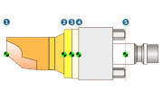

The Electrode milling dialog
The data for NC programming (joblist, milling area, stock, clamp and electrode feature) are created in the Electrode milling dialog. Subsequent machining of data is not possible via this dialog.
The dialog comprises the dialog pages General, Macros and Setup.
General
Joblist
The Name of the joblist is copied from the electrode designation.
Global clearance plane: set by default to 10000.
Model
Milling area and stock are created in the hyperMILL browser, if the Milling area and Stock functions are activated. The geometric data is copied from the selected electrode.
A clamp is created as an element in the hyperMILL browser if the Clamp function is activated. The geometric data is copied from the holder of the selected electrode.
Activate the Machine function and select the desired machine. In doing so, the Machine function is activated in the job list and the selected machine is transferred.
NCS
Use the NSC (NC system) to define the position of the zero point. Possible zero point positions include:
(1) Top of electrode area
(2) Top of reference contour
(3) Bottom of reference contour
(4) Bottom of electrode (only if no clamping device is activated)
(4) Top of electrode holder (only if a clamping device is activated)
(5) Reference zero clamping system
Based on the selected zero point position, zero point and frame are created as elements in the hyperMILL browser.
|  |
Macros
Available macros and selected macros are displayed on the dialog page. To use a macro during programming, move this to the Selected macros area. Generate the required macro beforehand. This is carried out based on the generated electrode feature using the New macro from feature function.
Use the Allow multiple apply function to enable multiple use of feature-based macros.
For information on creating a feature-based macro, see section Create macro.
Setup
The milling project directory for producing the electrode is displayed on the dialog page. With comments provided, production-related information is offered for the jobs. The Calculate function is used to create the toolpaths.
Save file
The milling project directory is displayed.
Joblist
Comment 1-10: Create optional comments. Comments are copied into the joblist created as joblist comments.
|
Enter the comments using a text editor. Each line in the text editor corresponds to a job list comment. |

Options
Calculate: The toolpaths are calculated.